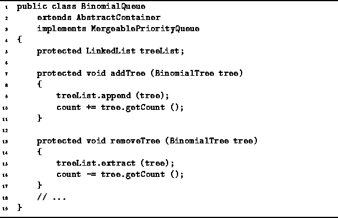
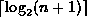
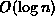

Data Structures and Algorithms
with Object-Oriented Design Patterns in Java
Data Structures and Algorithms
with Object-Oriented Design Patterns in Java
The addTree and removeTree methods
of the BinomialQueue class facilitate the implementation of
the various priority queue operations.
These methods are defined in Program  .
The addTree method takes a BinomialTree
and appends that tree to treeList.
addTree also adjusts the count in order to keep
track of the number of items in the priority queue.
It is assumed that the order of the tree which is added
is larger than all the others in the list and, therefore,
that it belongs at the end of the list.
The running time of addTree is clearly O(1).
.
The addTree method takes a BinomialTree
and appends that tree to treeList.
addTree also adjusts the count in order to keep
track of the number of items in the priority queue.
It is assumed that the order of the tree which is added
is larger than all the others in the list and, therefore,
that it belongs at the end of the list.
The running time of addTree is clearly O(1).

Program: BinomialQueue class addTree and removeTree methods.
The removeTree method takes a binomial tree and removes it from the list. It is assumed that the specified tree is actually in the list. removeTree also adjust the count as required. The running time of removeTree depends on the position of the tree in the list. A binomial queue which contains exactly n items altogether has at most  binomial trees. Therefore, the running time of removeTree is  in the worst case.
 Copyright © 1998 by Bruno R. Preiss, P.Eng. All rights reserved.
Copyright © 1998 by Bruno R. Preiss, P.Eng. All rights reserved.